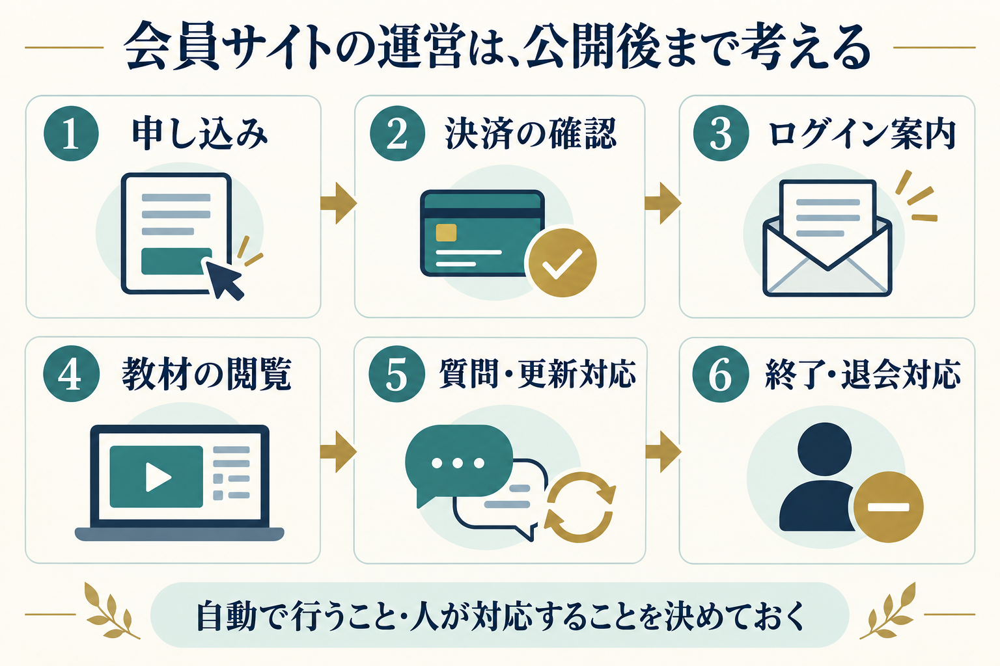

「自分の講座を動画で届けたい」「購入した方だけが教材を見られる場所を作りたい」。そんなときに選択肢になるのが、会員サイトです。
ただ、最初から機能やデザインを選ぼうとすると、必要なものが増え続けてしまいます。先に整理したいのは、誰に何を届け、申し込み後にどう使ってもらうかです。
この記事では、講座や動画の販売を考えている方に向けて、会員サイトを作る前に決めたい5つのことをまとめます。まだ教材が完成していなくても、紙に書き出すところから始められます。
会員サイトは、ログインした利用者に、閲覧を許可したコンテンツを提供する仕組みです。オンライン講座の動画、ダウンロード教材、会員向けの記事などをまとめて案内できます。
ただし、決済、動画の保管、質問受付などが、どの仕組みにも最初から備わっているわけではありません。使うサービスや構成によって、できることと費用が変わります。
ここでは、自分の講座・教材を販売する小規模な会員サイトを例に、考える順番を見ていきます。
最初に「会員サイトを持つこと」の先にある目的を決めます。目的がはっきりすると、必要な教材や機能を選びやすくなります。
例えば「受講後に一人で基本の作業ができるようになる」が目的なら、動画を大量に並べるより、見る順番と練習課題を分かりやすくすることが大切です。
書き出すこと：この講座を終えた人が、何をできるようになるかを一文にします。
同じ内容でも、初めて学ぶ人と経験者では、必要な説明が違います。すでに受講したお客様向けなのか、初めて出会う方に販売するのかも整理しましょう。
スマートフォンで見る方が多いなら、小さな文字の資料だけに頼らず、画面上でも内容を追えるか確認します。ログインに不慣れな方には、最初の案内やパスワード再設定の説明も必要です。
書き出すこと：届けたいお客様を一人思い浮かべ、「いつ・どこで・何を使って学ぶか」を考えます。
動画、PDF、音声、確認テスト、質問コーナーなど、提供方法にはさまざまな選択肢があります。すべてを最初からそろえる必要はありません。
例えば、初回公開の構成は「案内ページ・基礎動画・練習用PDF・質問先」から始める案があります。これは構成例であり、必要な内容は講座によって異なります。
「第1章から順番に学ぶ」のか、「困ったときに必要な動画を探す」のかによっても、一覧の作り方が変わります。
書き出すこと：教材の一覧を作り、「最初に必要」「後から追加」の2つに分けます。
会員サイトは、教材を置いたら完成ではありません。申し込んだ方が迷わず利用を始められるように、前後の流れも整理します。

少なくとも、次の場面を確認しておきましょう。
毎回同じ説明を送る作業は、案内文やFAQを整えることから始められます。自動化する場合も、決済の失敗や案内メールの不達など、例外が起きたときの対応は必要です。
書き出すこと：上の流れに沿って「担当者」「使う仕組み」「困ったときの対応」を一行ずつ書きます。
販売価格だけでなく、何をいつまで提供するかを決めます。買い切りでも、閲覧期間や質問対応の期間をどうするかは別の話です。
月額制を選ぶなら、継続して提供する内容と、そのための運営時間も考えましょう。買い切りなら、長期間の保管・保守・問い合わせ対応をどこまで含めるかが重要です。
初期制作費のほかに、利用サービス、動画保管、決済手数料、保守などの費用がかかる場合があります。具体的な金額は、選ぶサービスと必要な機能に合わせて確認します。
書き出すこと：「販売方法・価格・閲覧期間・質問対応の範囲」をひとまとまりで整理します。
まだ決まっていない項目は「未定」で大丈夫です。このメモがあると、見た目だけでなく、必要な機能と運営方法まで相談しやすくなります。
例えば、「対面講座の受講者向けに、復習動画とPDFを3か月間提供したい。質問は専用フォームで受け付け、平日に確認する」と書ければ、必要な仕組みを検討する土台になります。これは説明用の例で、実際の提供条件はご自身の講座に合わせて決めてください。
会員サイトは、機能を増やすことよりも、受講者が迷わず使え、運営する側も続けられる形にすることが大切です。
TAF Designでは、会員サイトの制作を承っています。「どの機能が必要か分からない」「教材はあるけれど届け方が決まらない」という段階でも、まずは考えている内容をお聞かせください。
ご希望の決済方法や動画配信、会員管理などの対応範囲と費用は、ご相談内容に合わせて確認します。